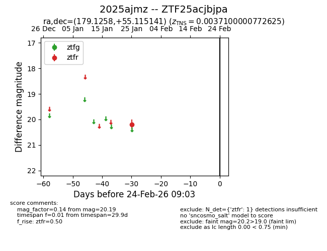
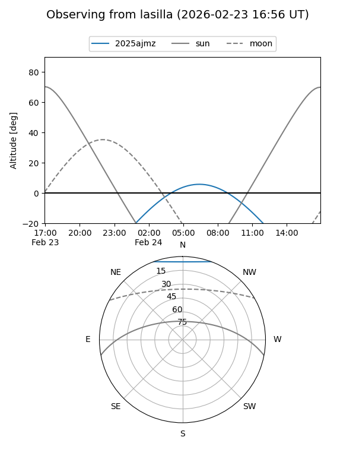
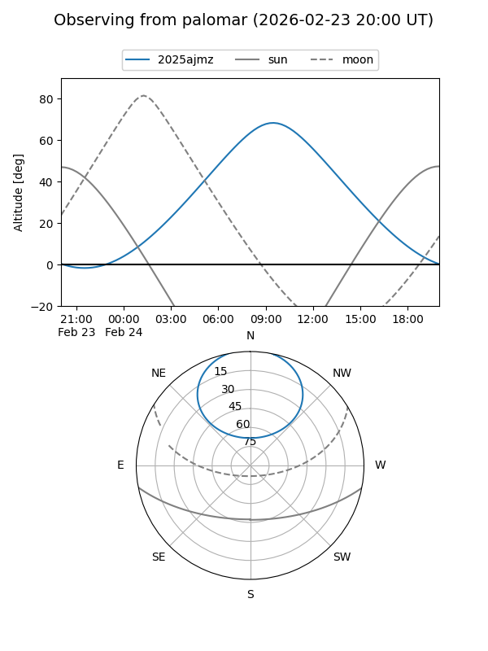

2025ajmz
Target 2025ajmz at 2026-01-27 11:06
Aliases and brokers:
FINK: link
Lasair: link
ALeRCE: link
TNS: link
YSE: link
alt names
ZTF25acjbjpa (ztf,fink_ztf)
2025ajmz (tns,yse)
Coordinates:
equatorial (ra, dec) = 179.1258,+55.11514
equatorial (HMS+DMS) = 11:56:30.19,+55:06:54.51
galactic (l, b) = (138.8300,+60.28506)
Flags:
Photometry:
last ztfr=20.19
1 ztfr detections
Lightcurve

Visibility


Additional plots